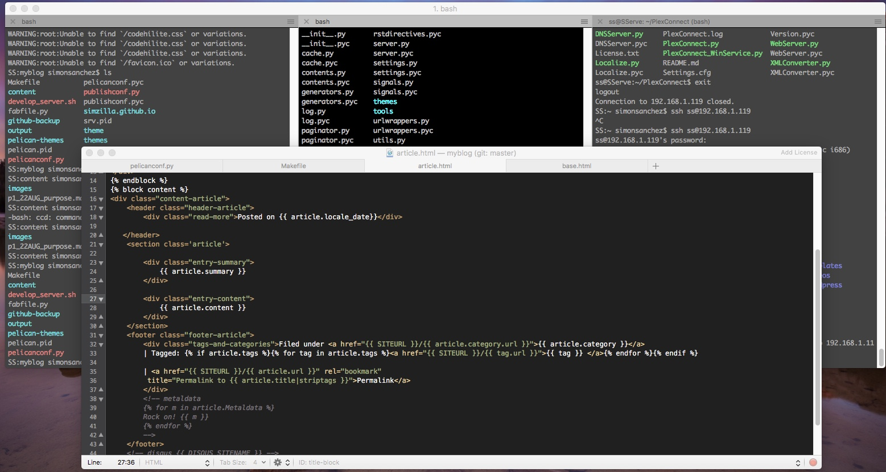

I have been a bad blogger...a terrible blogger. The thing I feared most happened to me. It has been many moons since my last post. I have had a lot going on and I have gazed into my screen, read pages of code, wanted to write...then I shut my screen in frustration and went on to something else. A lot has changed in this time...the political climate, the actual climate, technology, my willingness to try and turn something designed to be bare bones into something flashy...
Thus we are here! Lessons learned from a few months using Pelican and my first endeavor into the web.
Lesson 1: There is not a very active Pelican community
You know whats boring? Reading a ton of documentation on GitHub and cross-referencing a bunch of code with some html templates to try and figure out how a static-page generator works.

Over the course of the past few months I've done a significant amount of reading about various static site generators. There are some that seem lively and inviting, like a nice over priced middle-class community and then there is Pelican.
Pelican's community is pretty non-existent. It would be nice to jump onto a sub-reddit dedicated to Pelican development or find answers to all of my questions on Stack Overflow but my success utilizing both of these resources has been limited.
I think there are a couple of reasons for this.
First, the web development community in general is not focused on static site development. APIs and more complex sites open the door to a great deal of conversation whereas, with a static site, a generator is a convenience rather than a necessity. If I wanted to I could write my whole site in html...Pelican just streamlines the process.
Second, simplicity. Its not really that complicated to do stuff with a static site. Its basically html and some sort of templating engine. As I was diving into my site I noticed I was not getting accurate Google Analytics results. It was really easy for me to trouble shoot by pasting the requisite Google provisioned javascript into different places within the html that Pelican generated and see what worked.
I could easily solve all of my problems this way. What I really want to do is add a neat little picture to my feed list. Something eye-catching for all of my fans to click on instead of words that they have to waste time reading. I could hard-code this and make it laborious on myself but then why use a generator. I want to take advantage of what its already doing...but first I have to figure out exactly what it is doing.
Since trouble shooting is so easy, I guess most people don't require a ton of help as they develop, but Pelican is for people focused on getting words out...not really on presenting content to the general public.
Lesson 2: Where's the Documentation
I hate the documentation available for Pelican. Maybe it's just me and the way I like content laid out but I cannot stand it. I've messed with my site, I have set out with goals in term's of changes, and I have spent way to long staring at the documentation.
I don't think I have referenced the documentation successfully a single time. I made several attempts but I just don't find the information provided adequate. Maybe it's me and I just do not have the patience for crawling through the documentation to solve a specific problem.
I feel like it is just outdated. Nobody really presents to the general public using Pelican so there is no reason to keep up with trends. The user base is pretty knowledgeable and I feel like people with specific needs tend to create there own generators as opposed to refining these old ones.
I am not sure thats something I really want to get into. There are a million static blog flavors out there and I don't want to be a part of the over-population epidemic plaguing our world.
Lesson 3: Pelican almost killed my blog
I've been messing around with the theme I chose out of the bucket that comes packaged with Python. Months worth of messing around! I couldn't take it anymore...I had to go away...get to my happy place.
Making pictures and watching it come to life was fun at first. It was new and I was cautious...probably more than I needed to be. After that, it was tedious to make changes, streamlined changes anyway. I could hack my way through stuff, but I just am not a fan of the way I am able to make things look.
I never produced anything in Pelican, or saw something on the web made in Pelican, that I thought was instantly appealing. Nothing flashy or inviting and thats kind of what I was hoping for. The attempts and tries turned to tedium, the tedium turned to stagnate RootRanger web content and now DIVORCE.
In The Works
So effective immediately, a new look for RootRanger is in the works. Im going to stick with a static blog but instead of jumping into the first thing that tickles my fancy I am going to be a little more deliberate in what I decide to work with. Expect to read about this process in my next few blogs.
In addition to this, I recently picked up a Raspberry Pi 3 to mess around with. For a while I have been working on a project meant to streamline my fitness exploits. I've been getting soft and it is time to whip myself back into shape. I wrote a little program that emails me my daily workout schedule every morning. It is fed by a CSV file with my master plan and it scrapes a few web pages when necessary. I plan on adding a web side to control it...hopefully remotely. I'm going to write about this in the future too...it's a little off topic but fun. Give me a little time to make it super sweet and, to workup a mental sweat as they say, and then check back in.